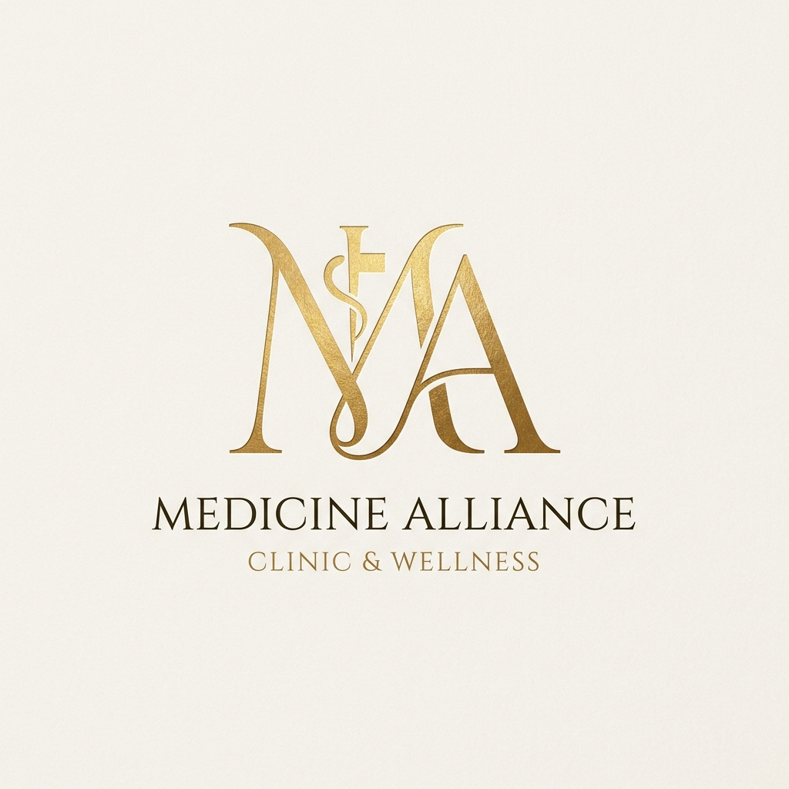
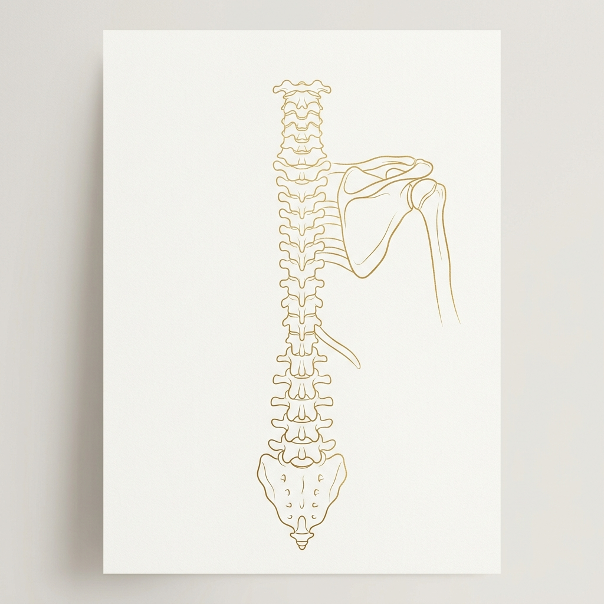

Miziara Amaral
Serviços Médicos Ltda
Quem somos
Sobre o Médico
Médico Ortopedista e Traumatologista com ampla atuação na assistência em hospitais gerais de trauma, condução de cirurgias ortopédicas de alta complexidade e liderança na gestão de equipes clínicas e residentes.
Unindo uma sólida formação técnica a uma visão de gestão assistencial, atua no aprimoramento de fluxos de saúde e na formação de novos profissionais, aliando empatia clínica à excelência técnica operacional.

Comprometido com a excelência do cuidado, a precisão diagnóstica nas emergências e o desenvolvimento acadêmico em trauma e ortopedia.
O que fazemos
Serviços Especializados
Assistência em Trauma
Atendimento ágil e qualificado em pronto-socorro e hospitais de trauma, garantindo a estabilização e tratamento cirúrgico adequado ao politraumatizado.
Cirurgias Ortopédicas Complexas
Procedimentos cirúrgicos avançados para fraturas, lesões articulares e reconstrutivas, utilizando implantes e metodologias cirúrgicas modernas.
Gestão de Equipes e Residentes
Coordenação pedagógica e administrativa de programas de residência médica em ortopedia, assegurando alto rigor acadêmico e assistencial.
Consultoria em Gestão Hospitalar
Planejamento e análise de processos para prontos-socorros e serviços ortopédicos, otimizando o fluxo operacional e o giro de leitos cirúrgicos.
Perícias Médicas Ortopédicas
Pareceres técnicos fundamentados, laudos detalhados e consultoria pericial em ortopedia para âmbitos cíveis, securitários e trabalhistas.
Protocolos Clínicos Baseados em Evidências
Criação, auditoria e implementação de caminhos clínicos voltados para trauma, visando padronização e redução do tempo de internamento.
Esclarecimentos
Perguntas Frequentes
A perícia médica é uma avaliação técnica realizada por médico especialista para determinar o grau de limitação, nexo de causalidade ou incapacidade laborativa oriundos de traumas, fraturas ou doenças ocupacionais na estrutura musculoesquelética. Ela resulta em um laudo pericial detalhado.
Trata-se de uma assessoria especializada voltada a hospitais, clínicas e prontos-socorros para estruturar a linha de cuidado do trauma. Envolve desde o desenho de protocolos de triagem de urgência até a otimização das salas cirúrgicas e treinamento técnico-pedagógico da residência médica para obter eficiência clínica operacional.
A base corporativa principal de Miziara Amaral Serviços Médicos está sediada em Rio Branco, no estado do Acre. Entretanto, devido às licenças ativas, o suporte a projetos de gestão, consultoria e assistência cirúrgica pontual estende-se a outros estados de registro profissional, como São Paulo, Mato Grosso e Goiás.
Novidades
Artigos & Curiosidades
Tecnologia & Inovação
Trabalho Integrado à Inteligência Artificial
A prática médica contemporânea exige o uso inteligente das melhores ferramentas disponíveis. Integro modelos avançados de IA de forma ativa à gestão do conhecimento científico, redação de protocolos assistenciais, pesquisa clínica e otimização operacional administrativa.
Fale conosco
Contato Institucional
Canais de Atendimento
Sede: Rio Branco · Acre · Brasil